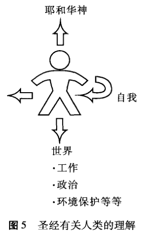

圣经之首五卷称为“摩西律法”(the Torah or Law of Moses)。尽管这并非意味是摩西写下每一个字，但其中大多来自他，且他毫无疑问是它们所讲故事的中心人物。第二卷《出埃及记》，讲述了摩西的出生及他作为领袖而出现——上帝借他带领以色列人逃出埃及。之后，摩西几乎出现在《申命记》结束前的每一章。但是这只解释了五卷中的四卷，最初的那一卷来自哪里?为什么它讲述了摩西出生很久以前的故事却是摩西律法的一部分?
“耶和华神 (Lord God)”是谁?
“米迦勒 (Michael)”这一希伯来名字的含义为“爱上帝的人”，“柯雷格 (Craig)”在盖尔语 (Gealic)中的含义为“露出地面的岩石”，这些对你来说或许无关紧要。在我们的文化中，尽管名字很重要，但我们确实并不经常赋予它们特殊的含义。然而在《旧约》的世界中——我们即将在第一幕中读到，名字的意义往往非常重要。并且没有任何一个名字比那些在《创世记》和其他的《旧约》书卷中指称上帝的名字更为重要。
在《创世记》1章中，整个古代近东地区使用希伯来词语“耶路欣”(Elohim，在英文圣经中被简单地译作“神”[God])作为上帝的常用名字。而且圣经讲到，“神”使得整个受造界从无到有。但《创世记》2：4开始使用了另一个名字， “神”现在被称为“耶和华神 (theLord God)”(Yahweh Elohim) 或耶和华、耶路欣。这是提及上帝的一种非同寻常的方式，它旨在揭示有关上帝是谁这一问题的一些重要信息。
《旧约》中重要的两段经文 (《出埃及记》3章；6：1-12)阐明了这一神秘的名字耶和华¹ (Yahweh，或者如圣经的某些旧版本之中的 Jeho-vah)。²这些经文表明了上帝作为耶和华在召唤摩西带领以色列民逃离埃及奴役时怎样向他显示自己。耶和华这一名字是上帝选择用以证明自己是神圣救赎者的，上帝将他的子民从奴役中救出并在西奈山 (《出埃及记》19:4) 与他们相见。
当耶和华 (主)和耶路欣 (神)两个名字在《创世记》2：4中结合在一起时，这极其有力地表明拯救以色列民脱离奴役的神与作为天地的创世主³创造一切的神乃是同一的。“耶和华，希伯来人的神，即是统治权力透过冰雹和响雷而支配全地的神。”⁴以色列人起初把上帝作为他们的拯救者来认识上帝 (通过摩西)，之后他们才知道他亦是创世主。尽管我们生活在圣经故事中非常靠后的阶段，但我们的情景也没有大不相同。当我们通过上帝的儿子耶稣 (Jesus)的救赎工作来认识上帝时，我们首先认识到他是我们的救世主和拯救者，但是上帝仍是过去、现在和未来一切的创世主：他是那唯一永恒的主神——耶和华——耶路欣。因此，一旦我们开始见证我们的信仰、讲述基督教的故事(而不仅仅是我们自己的个人故事)，我们不可避免地被逼回到一切的开端：创世自身……“起初,神……”
以色列的信仰
任何故事的开篇都值得关注，圣经故事的开篇亦不例外。《创世记》前几章是为很久以前处在迥异于我们的文化之中的以色列人而写，讲述了创世的故事。尽管《创世记》1、2章中创世故事的有些方面在我们看来有些奇怪，我们需要记住：以色列人在最初看到这些故事时能够很好地理解它们，这是因为作者使用了为他的读者所熟悉的意象和概念。在《创世记》前几章所写作的古老社会背景下，一旦我们阅读它们，便开始认识到这一故事所要传达的信息的力量。
有几位学者指出了《创世记》1、2章中颇具争议的一点。古代近东地区流传着许多关于世界起源的故事，且相互论争。当以色列被俘埃及以及以色列开始占领迦南作为自己的土地时，这些故事在埃及普遍存在。以色列人轻易地就可以接受以前居住在这里或者附近的以及那些被认为对这片土地更为熟悉的人的故事。迦南人所崇拜的神中许多与土地的生产力紧密相连，努力学习在那片土地上进行农业种植的新来者，当然会受到透惑，向这些神而非耶和华神呼求。
我们知道很多流传于古代世界的创世故事，观察《创世记》1、2
章所讲故事怎样蓄意地与这些故事的某些重要因素产生冲突，这将引人入胜。例如，看看《创世记》1：16是怎样描述日月的。经文中并没有使用普通的希伯来名称来提及太阳，相反仅仅用“大的光”——上帝用它创造白昼；同样，经文把月亮称为“小的光”。这是为什么?或许是因为日月被人们非常频繁地当做神来崇拜，而当时以色列人正居住于这些人之中。《创世记》故事的读者绝不可能把太阳当做神来崇拜，圣经明确地把太阳描述为一种被造物，一个为了简单、实用的目的——发光——而被置于天空的物体。因此，所有的注意力集中于这种神奇的光的创造者，集中于仅仅说一句话就使得整个宇宙得以诞生的巨大力量的拥有者。仅仅是天空中的光体绝不值得膜拜，只有上帝是神圣的，只有上帝应受崇拜。尽管所有受造物都是“好的”(《创世记》1：31)，但这之所以如此，是因为这个世界的创造者无比优越于他所创造的任何事物。
并且这位超越性的造物主并不像巴比伦创世故事 (《埃努玛埃里什》，the Enuma Elish)中的神那样反复无常，那些神仅仅把人类当做奴仆，为他们服务、使他们高兴。在《创世记》中，创造世界的上帝将男人和女人置于这个世界中，作为在他自己所造的一切之上添加的登峰造极的一笔。万有本身被描述为为人类所准备的美好家园，一个他们能够生活、得以繁荣并且享受创世者的亲密同在和陪伴的地方。
《创世记》第1章属于什么文学体裁?
《创世记》的创世故事因此存在争议。它们宣称要讲述关于世界的真理，与古代世界常见的其他此种故事相冲突。以色列不断地被引诱而接受那些故事作为他们的世界观，而不信仰创造了天地的上帝。但是，《创世记》的叙述不仅仅是一种论辩，它的目的还在于明确地教授我们：怀有对上帝怎样的信仰，意味着我们怎样理解他所创造的这个世界以及我们怎样生活其中。它通过故事的形式来说明这个问题。并且，如果我们不想对故事产生误解，这一种故事形式正需要我们加以注意。
为了理解《创世记》的创世故事，我们必须了解它是什么样的作
品。在对其界定上学者自身亦存在困难，冯·雷德 (Von Rad)视其为“信徒的教义 (priestly doctrine)”,极富内涵以至于“无论在神学上怎样阐释它都不会过分”。⁵布洛谢 (Blocher)把创世的叙述看作是精雕细琢的智慧文学。⁶但学者们所一致同意的是，《创世记》前几章所叙述的内容是非常精心地被安排在一起的：讲述中的人为修饰极为明显。因此，如同我们十分关注故事的细节一样，我们也需要注意故事被叙述的方式，并且权衡是否应该像现代历史学家和科学家一样去阅读这些细节。的确，这是一个困难的问题：这里所叙述的故事就是历史本身的神秘开端。但是，《创世记》故事的宏大描述，对于我们而言，就如同最一开始听到这些故事的那些人一样，同样是清晰的。上帝是一切存在物的神圣来源。他与所有的其他事物相区隔，处于创造者与被造物的特殊关系中。造人注定是上帝所有的创造工作的高潮，而且在上帝心中，他和他的最后造物之间有着特殊的关系。
这些章节向我们讲述了创世的故事，但涉及上帝如何创造世界的细节时，它们并不能满足我们21 世纪的好奇心：例如，我们想知道上帝的创世是跨越了很长的时期，还是他使得一切在瞬间产生。但是，《创世记》故事使我们能够真正认识我们所生活的这个世界，它的神圣作者，以及我们自己在其中的位置。正如约翰·斯戴克 (JohnStek)有关创世在《创世记》中的地位所恰如其分地叙述：
摩西……的意图在于表明有关真神的知识，正如神在创世工作中将他自己显明出来的那样；在于表明这些有关真神的知识带给人们的对人类、世界和历史的正确认识——并且摩西乃是在与他的时代里占据优势的错误宗教观念针锋相对的情况下，显示有关这些问题的正确认识的。⁷
与支配着埃及和迦南的异教观念相对，《创世记》1章表明了关于上帝、人类和世界的真理。当与古代近东的神话相对比时，上帝、人类和世界的形象变得清晰起来。这一序曲向我们介绍了戏剧中的主角——上帝和人——以及历史戏剧将展开于其中的世界。
| 异教神话 | 《创世记》1章 |
| 众神 | 上帝 |
| 人类 | 人类 |
| 世界 | 世界 |
表1 异教神话与《创世记》1章相对比
创造一切的上帝
阅读《创世记》1章，你仿佛置身于一场非常伟大的艺术展览。假定你正安静地坐着，被宏伟图画的美和力量所征服。这时有人走近你说道：“你愿意见一见艺术家吗?”《创世记》1章就是对这位艺术家的介绍。这是怎样的一个介绍啊！希伯来圣经一开始的三个词语可以被译为(1)“起初”、(2)“ (他) 创造 (created)”、(3)“上帝”(行动主体)。通过三个简短的希伯来词语，我们回到了一切的开端，回到了神秘的所有一切的具有位格的源泉：永恒的自有的上帝。上帝自身无始无终，仅仅通过说出一个命令的词语就使得一切存在物得以产生。
因言而生的观念首先维护了创造者和被造物之间最根本的区别。创世绝不能被视作出自上帝的散发。它并非上帝的本质和神性的什么外溢。相反，它是上帝自我意志的产物。上帝与他所做的工之间唯一的连续性是他的话语。
《创世记》1章向我们介绍了无限、永恒、自有的上帝，他的创世行动使得所有的被造物得以存在。“天和地”(《创世记》1：1)指的是所有的被造物。光和暗，昼和夜，海、天和地，植物、动物和人——全都是从这一上帝而来，从他强有力的美好的创世活动中而来。正如冯·雷德所说：“通过圣言创世的观点表明了整个世界属于上帝这一知识。”⁸
这的确是逻辑很难跋涉而过的许多关键点之一，然而信心却能够漂浮而过。“圣经起始之地即为我们的最为狂热之思想浪潮崩溃之地，这些思想自寻毁灭，如雾气和泡沫般丧失力量。”9在《启示录》中，对上帝持续不断地敬拜的重要原因之一是他在创世中的工作：
我们的主，我们的神，
你是配得荣耀、尊贵、权柄的，
因为你创造了万物，
并且万物是因你的旨意被创造
而有的。(《启示录》4:11)
圣经最后一卷书中的这一赞美圣歌正是被置于天堂的御座殿。这是适宜的，因其重述了从《创世记》所讲的创世一开始就暗示了的关于上帝的真理。通过大能的圣言使得万有得以存在，上帝将万有建于自己的广阔国度。因此他自身成为了所有受造物的伟大的王，毫无任何限制，且在他的造物的敬拜中配得一切荣耀、尊贵和权柄。
在古代近东地区，人们知道权柄实为何物。在他们之中，即使是部落或民族的统治者，其权力也几乎是绝对的。在《创世记》1章的众多方式中，上帝被刻画为独一君主，一位凭借对所有被造物的权利和权力使其主权得以扩展的王者。在古代世界，不能永生的王的无足轻重的话语也会被听到它的人当作命令。但是，这位永生的王发出话语，他的神圣命令使得所有被造物恰按他的意志产生。上帝在创世时，赐名于他的造物，这又是他的主权的体现。“赐名行为首先意味着对主权的行使。……因此为其和一切后来的作品命名再次形象地体现了上帝对被造物所拥有的神圣权力。”10
在《创世记》1章中，上帝的命令话语，即那被一再重复的短语“要有……”，使得以精确、有序、和谐为特征的创世得以产生：
正如上帝是使时间运转、气候形成的独一之神，他同样负责确定人类存在的其他一切方面。水能够流动、菜蔬能够在土地上生长，农业节律和季节循环，上帝的每一个被造物，都因某种作用而被造——所有这一切都由上帝确立秩序、都是好的，既无压制，也无胁迫。¹¹
上帝所创造的一切是“好的”，而且被造物的这一良善正是突出了
创世主自身无与伦比的良善、智慧和正义。只有他才是一切所在的伟大王国的智慧之王。
但是，作为王，上帝自身并未远离他的造物。他并非是那种高居远方进行统治，对领土和子民毫不关心的王。建立王国之后，上帝用一种非常个人化的方式进行统治。《创世记》1、2章描写的上帝与我们关系极为密切。他发出言语，不仅是为了发布命令，而且是为了显现他自身涉入于宇宙创造之中。在《创世记》1：26 (我们视为上帝与天使召开的天堂议会)中，有一个“我们要照着我们……”难解的词语。这使我们注意到上帝的位格和他的意志，一定有其他存在物不同于 (但相连于)他。¹²但最为引人注目的，是上帝在造人时祝福人类并直接同他们讲话：“要生养众多，遍满地面，治理这地……”(《创世记》1：28)神圣的王和他的子民之间有个人关系。上帝有着特殊使命，并邀请他的子民参与其中，在他赐予他们的这个家园——世界——中遍满，并使其有序。上帝的个体特征在《创世记》2、3章中体现得更为清晰。主、神(耶和华、耶路欣)在乐园 (the garden)中同亚当和夏娃散步，对他们、他们的需求及他们的职责表示最为亲密、个人化的关心。
作为上帝之形象的人类
《创世记》中创世故事的高潮是造人 (1：26-28)。在圣经中，男人或女人是作为上帝世界的一部分而被创造的造物。无论我们怎样将上帝的创世活动与科学理论相联系，¹³对于“我们是谁”这一问题，如果我们忠实于圣经所讲，我们就不可能仅仅认为我们是时间和偶然性的产物(正如无神论的进化理论所鼓吹的)。人类是被造的，而且除此以外，根据《创世记》(以及圣经的其他部分)，每个人还都是独特的被造者。
在《创世记》1、2章中，关于人类的教导非常丰富且多种多样。在上帝的造物中，人类的特殊之处在于具有位格性。上帝只对那男人和女人讲话：他们享有与上帝的特殊的个人关系。正如奥古斯丁很久以前在《忏悔录》(Confessions)中所观察到的那样：我们是为上帝而被造，直至我们安歇于主，我们的心不能安宁。¹⁴《创世记》3：8节令人震惊地14
叫人想起造物的上帝与他那被造的人类之间的关系。上帝习惯于“凉风起了在园中行走”，与他安置园中的男人和女人见面。戈登·韦纳姆(Gordon Wenham)注意到，《创世记》在描述上帝与其子民共居的那个乐园时所使用的词，如何叫人产生对帐幕的清晰回忆。¹⁵男人和女人因着与上帝的亲密关系而被造，且我们的土质性也不会阻碍这种关系。上帝经常同亚当和夏娃在巨大的乐园中散步，就是他为他们特别安置的乐园。他同他们商议这个伟大的乐园在怎样发展，在他们的照料下植物怎样生长、动物间怎样相处。
现代学者经常提到《创世记》中两个创世故事，认为在1：1-2：4a与2：4b-25之间存在着差异。这种看法有一些误导性，因为尽管这两部分截然不同，它们却是紧密相连的。《创世记》1章是从人类与世界的关系来看人类，而《创世记》2章是关注男人和女人之间及他们与上帝之间的关系。因为它们从不同的视角关注作为人的意义，所以这两章使用不同的形象和比喻。
在《创世记》1：26-28中，上帝按照他的形象、照着自己的样式造人。注意：词语“形象”和“样式”含义相同。尽管上帝是永恒的造物主，人类仅仅是他的有限造物，但在他们之间存在着根本的相似性。“形象”是一种比喻，当我们理解它时，我们需要记住它作为一种比喻的作用在于使我们注意到人类与上帝的巨大相似性，但它同时从未否定我们与上帝在根本上是不同的。之前我们知道上帝作为造物主与他的任何造物都是根本不同的——包括我们自己。但是，如果人类是“按照上帝的形象”而造，那么在某些方面我们与我们的造物主是相似的，这种相似性在其后的章节中得到阐明。
在《创世记》1：26中，神说：“我们要照着我们的形象，按着我们的样式造人，使他们管理……全地。”然后他对他所创造的人类说：“要生养众多，遍满地面，治理这地；也要管理⋯⋯”(1：28)由此，这一点是清晰的：上帝和人类的根本相似之处在于人类的独特使命，上帝自身对人类的感召和差遣。以神之名，人类注定要统治地上、海里、空中的其他造物，正如神是一切的最高统治者一样。如冯·雷德所阐释：
正如地上强大的君王们，为了声明他们管辖的权力，在他们自己并不出没的帝国树立起自己的形象一样，人类依着上帝的形象被安置于地上，作为上帝至高统治的象征。他的确仅仅只是上帝的代理人，受感召去维持和执行上帝对地上的管辖权力。因此，人类与上帝相似的决定性之处在于人类在非人类世界的职责。¹⁶
在上帝通过创造而建立的王国中，他赋予人类的特殊角色在于我们应当作他的副王、副摄政王，或管家。我们要统治造物，借此在上帝的宇宙王国中荣耀上帝。
在某些环保论者的圈子中，《创世记》1：26-28变得声名狼藉，因为在林恩·怀特 (LynnWhite)的论点中，这个教导被用来为许多环境破坏辩护，即那些成为现代社会特征的环境破坏。¹⁷这段经文的确认为人类具有作为统治者或者管辖者的使命，但要说这段经文正当化了对自然的残酷统治和自私利用是不正确的。在上帝自身的创世工作中，他的行为是为了他的造物的好，而非为了他自身的愉悦。例如，他为人类创造了完美的家园，且在上帝于乐园中全部工作的每一环节，创世都被描述为“好”或“很好”。在这一好的创世中，上帝召唤人类作为“统治者”如同管家或副管辖者一样，在他自身对世界的至高统治中传达他对其美好的造物的关怀和保护。《诗篇》8：6极好地表达了这一点：人类的荣耀在于上帝派他们“管理 (他)手造的”。不能认为这表明人类可以对上帝的作品为所欲为。最为重要的是，人类管理者对把世界委托给他们的神圣造物主负有责任。
作为人意味着有很大的自由和责任，回应上帝并负起责任。由此，一种更好地表达人类“统治”造物的概念或许可以说我们是上帝的王室管家，被置于此来发展在上帝的造物中所隐藏的潜能，好叫整个被造界都得以赞美他的荣耀。
假想你是15世纪的雕刻家，有一天收到米开朗基罗的一封信，他邀请你到他的工作室去完成一件他已着手开始的作品，并问你是否愿意去。他提到希望最终的作品能够提高他的声誉，希望你能够以此为目标继续他的工作！上帝召唤我们“管辖”他的造物，这带给我们的就是
此种赞许，这种赞许是我们作为他的管家能够获得的。神的呼召也带给我们相应的重大责任，要对我们管理的结果负责任。如果这是我们“按照上帝的形象”而被造所涉及的，那么很明显我们为神而做的就如创世自身一般宽广，且将会包含保护好环境。从《创世记》1：26开始的这段经文常常视为“文化或创世使命”而被有益地提及，它告知我们应使每一种文化活动都侍奉上帝。的确，“上帝的形象”包含着一种动态因素，正是在我们忙碌于造物之中，在农业、艺术、音乐、商业、政治、学术、家庭生活、教会、闲暇等，以荣耀上帝的方式发展被造物的潜能时，上帝自身在他的创世中被显明或者“反唤”出来，当我们接受上帝的创世命令——“要有……”，并发展这命令中的潜能时，我们就不断地把上帝临在的芬芳散播到他所创造的整个世界之中。
《创世记》1章并没有把人类描述为剥削利用世界的专横暴君，而是在上帝的权柄之下进行统治的管家。我们与上帝关系的本质在于我们如何照管他的美好造物；我们不仅是作为个体，而是作为合作人去做这些。
在《创世记》1章中，人类被造为“男人和女人”。性别的差异被纳入创造中，以便上帝形象的承载者总是或男或女，或男人或女人。也就是说，我们总处在与彼此的以及与上帝的关系中。没有人能够仅靠自己而成为一个完全的人：我们总是处在众多的关系中。人类是为上帝而造，《创世记》2章更为密切地关注这一关系，以及人类因上帝创世的方式而生活于其中的其他关系。《创世记》2：18-25 讲述了上帝创造夏娃并使其作为亚当的恰当助手和伴侣的故事，再一次显现了上帝爱他的造物这一特殊本质。通过赐予人类对人类自身而言的最好之物，上帝展现了他的爱。亚当对地上万物的统治表现在他对动物的命名中：正如(《创世记》1章)上帝在创世时为造物命名一样，亚当被允许为上帝所造的动物命名。由此，亚当与上帝有一种关系，与动物世界有另一种关系。但是亚当亦为人的伴侣关系而被造，这体现于他与夏娃的婚姻这一深层关系之中；从二者成为“一体”(2：24)的描述中可以发现这种结合的亲密性。
亚当和夏娃统治造物的使命，体现于《创世记》2章中他们对乐园
的责任，他们要在那里面劳作，并且看守乐园 (2：15)。从《创世记》2：8-14的描述来看，这个“乐园”更像是一个大型国家公园，而非我们的家庭花园。它非常大，不仅有河流穿过，还有许多树和动物生长其中。亚当和夏娃因此是最早的农主和自然护理者。我们再一次看到，做人就是与一切造物有某种关联性，即劳作于其中，发展它的潜质并照管它。人类是为上帝而造，同时既是为各人彼此也为造物而造，以便劳作于其中。根据《旧约·诗篇》8章，从事劳作并以此来展现上帝的形象，这是我们的荣耀。
《创世记》1章和2章描述人类所处的种种关系可以用下图表示：

世界作为神的国度
尽管基督教常常被指责为脱离尘俗，现在有一点应该是清楚的，即：圣经故事绝非鼓励人们与这个空间的时间的物质的世界相分离或感觉自己高于此世界。圣经把这个被创造的物质的世界描述为上帝荣耀的真正剧场，是上帝统治的国度。《创世记》最初几章对世界具有非常肯
定的态度。尽管它是被创造的 (因此永远无法与永存的上帝相提并论)，但它一直被描述为是“好的”。在《创世记》1章中，对“好的”这一词语的重复使用，表明整个被造界来源于上帝，且其最初状态完美地体现了上帝自身对它的设计和规划。被造物具有极大的多样性：光和暗、地和海、河流和矿藏、植物、动物、鸟和鱼、男人和女人。这种恩惠是上帝意图的一部分，体现了造物之间不可思议的和谐。它如管弦乐队一般，奏出对造物主的赞美交响之乐。在这种多样性中存在着秩序；上帝的创造性话语赐予其结构。
《创世记》亦表明我们的世界存在于时间之中。上帝是昼和夜的创造者，且为它们命名。最初的这几章较少提及上帝希望他的造物应怎样随着时间而发展，但是很明显他的意图是叫他的造物能够有所发展。男人和女人要在二人合为一体的结合中繁衍后代，并且这些后代要繁衍扩散来统治这地。《创世记》2：4的故事以这样的短语开始，“创造天地的来历……乃是这样”，这表明历史是创世的一个主要部分。¹⁸亚当和夏娃在上帝所创造的神奇乐园中的工作标志着一个漫长过程的开始，在这一过程中他们的子女和后代要开发造物并使之丰富。亚当和夏娃对伊甸园所尽的王室管家职分，仅是上帝意图使整个造物界随着历史的展开所将遭遇事情的一个小小版式。
本页内容由站点发布者提供的授权 Word 版本转换而来。为保留原书内容，文字按源文件呈现；版权归原作者及出版方所有。